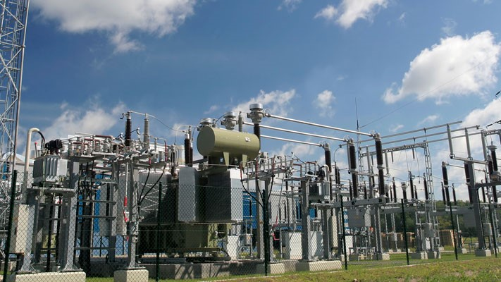

This project involved enhancing signal strength in Muscat, Oman, by optimizing coverage towers using ATOLL. It included analyzing coverage maps and adjusting site parameters to significantly improve network performance and reliability across the region.

This project involved designing and configuring a reliable Cisco network for a global travel agency in a real Cisco lab, focusing on load balancing, advanced security protocols, and optimized traffic management. The network utilized VLANs, EIGRP, and HSRP to enhance efficiency and security.

This project developed an innovative AI-based physical smart chessboard, boosting user engagement by 40%. It also incorporated integrated coaching features to significantly enhance the learning process. The thoughtful design greatly improved both gameplay and educational outcomes.
This project developed an automated security system to prevent BGP protocol attacks on Cisco routers. The system was implemented and rigorously tested in a real Cisco lab environment, involving 50 PCs. This ensured robust protection and performance under realistic network conditions.
This project involved identifying and mitigating security vulnerabilities in a university Wi-Fi network through extensive penetration testing. Utilizing tools such as the Aircrack-ng Suite, Wireshark, Reaver, and Wifite, the testing ensured the network's robust security against potential breaches.
This project focused on conducting research on the implementation of 6G infrastructure over existing 5G networks. It involved exploring technical challenges and identifying potential solutions to facilitate the transition to 6G, aiming to enhance future telecommunications infrastructure.

This project involved investigating vulnerabilities in SCADA systems and proposing enhancements that significantly improved security in critical infrastructure. The research focused on strengthening the resilience of these systems against potential cyber threats.
This project involved building and configuring a personal VPN server on a Linux platform. The setup ensured secure and private network communications for the user.